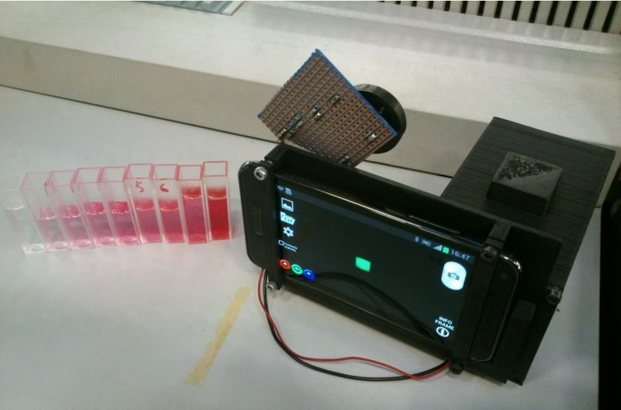

Projects.
Android application for dianostic agricultural and food analysis based on image processing
I've developed this Android app as a thesis, and aims to analyze absorption of light by various substances, in order thus to identify absorbance.A number of libraries were used in the development of this application, such as OpenCV and GraphView, which being OpenSource and providing simple but accurate methods and was the ideal libraries for the development of the image processing algorithm and to graph the results.
Another aspect that was evaluated was the amount of computation that the device would have to deal with, having to work with images it is not a given that the performance could be up to the required role, for this reason the development relied on the NDK package giving the possibility to use C portions of the OpenCV library code for image processing.
# Main feature
- Acquistion interface
- Photo gallery management
- Data analysis
- Presentation

ARCHITECTURE
At the architectural level, the application consists of three main blocks, a block acquisition block, a processing block and a presentation block.

ACQUISITION
This block is the one in charge of acquiring the images to be processed and manage the images saved in the internal memory by delegating the analysis of them to the processing block.
As per the image in fact, it is possible to acquire the photo through the device's camera or send the image to the processing block by fetching it directly within the le system. It is therefore possible to use the app to analyze images even not directly captured by the camera of the device on which it is installed.
PROCESSING
The most substantial block in the entire architecture is the processing block. It is the part that handles all the functions implemented for image analysis and performs the most complex calculations. The image processing operations implemented are multiple, such as:
- Image channel decomposition
- Crop (image cropping)
- Pixel analysis
- Filters (binarization, saturation, etc...)
The most important function is the one that performs RGB averaging within the acquired image, and then performs calculations on absorbance and light intensity. The approach chosen was to perform this operation directly on the device, in order to have an immediate result under any condition and at any at any time.
PRESENTATION
The last block has the task of showing the user the results obtained after the processing phase, this is a definitely important block that requires simplicity and cleanliness of the interface. A simple interface was designed trying to think in the perspective of the nal user so that he could have access to all the results on a single page.

> More